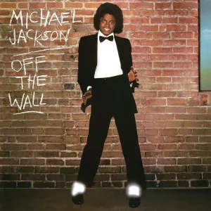

O que é o funk?
O funk surgiu da combinação do blues, gospel, jazz e soul nos EUA e, há quem diga que a palavra “funk” ou “funky” era usada pelos músicos como uma forma de pedir por mais força no ritmo, dizem que é uma junção de palavras do vocabulário quimbundo "lu-fuki" e do inglês “stinky”, ou seja, o funk pode ser considerado a descrição de uma música com batida constante e melodia dançante.
Evolução do funk
Década de 50
O pianista Horace Silver juntou o virtuosismo do jazz às melodias mais dançantes do soul, nascendo daí as primeiras músicas no funk, como retrata “Song for my father”.
Década de 60
James Brown marcou a aparição do funk nos Estados Unidos, e o ritmo estava diretamente ligado à luta pelos direitos civis no país. As letras contavam o cotidiano de discriminação e da falta de perspectiva dos afrodescendentes.
Década de 70
Começaram a experimentar o funk com a música eletrônica e com o rock, fato dado pela popularização do disco de vinil e de equipamentos mais potentes, ou seja, os músicos não tinham a necessidade de estar fisicamente presente nos ambientes para que pudessem produzir as músicas, assim surgindo os DJ’s. A mistura de melodias graças a eles conquistou artistas do pop como Michael Jackson, que em “Don’t Stop ‘til You Get Enough” mostra claramente a influência do funk.
Imagem 1, referente ao disco “Off The Wall” de Michael Jackson, retirada do site The Second Disc.
George Clinton foi o autor da mudança mais característica na época, misturando o funk com as guitarras e outros elementos que eram característicos do rock progressivo e psicodélico, assim retratado na música “Hit it and Quit it”, esse estilo de música foi denominado como “P-Funk”.
Década de 80
Com a presença cada vez mais forte dos sintetizadores, o funk e o hip hop acabam se combinando, criando assim duas vertentes, uma originária de Nova York e uma dos bairros da população negra de Miami, sendo essa fortemente influenciada nas letras e nas coreografias pela rumba, ritmo oriundo da Cuba. Vale lembrar que, naquela época, o funk era extremamente comercial e bandas como Sugarhill Gang e Force mudaram esse conceito.
Imagem 3, referente à banda Sugarhill Gang, retirada do site Singers Room.
Ao final dos anos 80, surgiu a house music, um derivado do funk que tinha como característica a mistura do funk e samples eletrônicos. Esse gênero foi um fenômeno nas pistas de dança e, pouco depois, introduziram o som distorcido de guitarras de heavy-metal, exemplo visto na banda Red Hot Chilli Peppers e Faith no More.

Imagem 4, referente à banda Red Hot Chilli Peppers, retirada do site Rolling Stone.
Funk no Brasil
O funk chegou ao Brasil na década de 70, ganhando vozes como Tim Maia e Tony Tornado, eles misturaram o ritmo estadunidense com a batida da música brasileira. Na época, o radialista Big Boy começou a promover os chamados “Bailes da Pesada” no Canecão, bairro localizado no Rio de Janeiro, onde funcionava uma churrascaria. Lá tocava-se rock, soul, groove e funk. Quando esses bailes chegaram ao fim, Big Boy resolveu promovê-los em outras regiões do Rio de Janeiro, tocando tanto na zona sul quanto na zona norte.
Imagem 7, referente ao Baile da Pesada, retirada do site Kondzilla.
Imagem 5 e 6, referentes à Tim Maia e Tony Tornado, retiradas dos sites Diário do Rio e Gov, respectivamente.
Segundo o DJ Marlboro, foi a partir desse momento que surgiram dois tipos de baile: os de rock e os de música eletrônica, que via-se referência ao Miami Bass, e esses bailes de música eletrônica ficaram conhecidos pelos famosos Bailes Funk.
Popularização do funk no Brasil
Apareceu na década de 80, misturando batidas eletrônicas do hip hop, da poesia do rap e dos talentos dos DJ's em mesclar batidas repetitivas com a melodia. As letras falavam do cotidiano da favela ou do subúrbio carioca, representado pela música “Lá em Acari” do Mc Batata, ainda ligado à estética do Miami Bass. Nos anos 90 a violência urbana aumentou, tal qual a invasão policial às favelas, e então as letras passaram a contar essa realidade, visto em “Rap das Armas”, mas, por outro lado, o funk também foi usado para pedir por direitos civis, visto em “Eu Só Quero é ser Feliz”. A partir do século XXI as letras se tornaram erotizadas e apelativas, abandonando a estrutura de estrofe e refrão para resumir a frases de efeito, visto em “Atoladinha” DJ Marlboro afirma que a popularização do funk no Brasil se deu muito pela internet, ele diz que algo que se popularizaria em 50 anos, tomou grandes proporções por conta da propagação online. Foi na virada do milênio que o funk deixou de ser um ritmo periférico para chegar aos ouvidos da classe média e a alta do país, tomando espaço nas boates, academias, tocando em rádios e fazendo parte de trilhas sonoras de novelas e filmes nacionais. A produtora Furacão 2000 popularizou o baile funk e lançou grandes nomes, como Gaiola das Popozudas e Os Hawaianos. Em 2001 o funk do Bonde do Tigrão alcançou seu primeiro disco de platina pelo Pró-Música Brasil, vendendo mais de 250 mil cópias.
Imagens 8, 9 e 10, referentes à Furacão 2000, Gaiola das Popozudas e Os Hawaianos, retiradas dos sites Sua Música, Rate Your Music e Cifra Club, respectivamente.
Atualmente o funk 150 bpm domina os bailes do Rio de Janeiro, levando nomes como FP do Trem Bala, Mc Kevin o Chris e DJ Rennan da Penha.
Imagens 11, 12 e 13, referentes à FP do Trem Bala, Mc Kevin o Chris e DJ Rennan da Penha.
Subgêneros do funk
Funk carioca
Na verdade, é o funk tradicional do Brasil, já que no país, ele nasceu no Rio de Janeiro e a maioria dos funks criados depois disso integram esse subgênero à eles. Dentro do funk carioca existe o 150 bpm, que apesar de ser novo, ele é um ritmo bastante popular. A sigla bpm significa batimentos por minuto, o que resulta em uma batida mais acelerada do que o normal, que seria o 130. Dentro do funk carioca podem ser citados alguns nomes conhecidos como Mc Marcinho, dono do hit “Glamurosa”, Mr. Catra e Claudinho e Buchecha.
Funk ostentação
Falam sobre carros de luxo, jóias e dinheiro, as letras exaltam o consumismo desenfreado e incitam o desejo da população periférica de melhorar a qualidade de vida, saindo das favelas e adquirindo aquilo que é mostrado em novelas e propagandas. O subgênero nasceu em São Paulo e já conquistou muitas pessoas, mas com o começo dos “rolezinhos”, onde jovens marcaram seus encontros via eventos do Facebook e se reuniam em parques ou shoppings, em 2013, esse subgênero ganhou cada vez mais visibilidade e, nesse mesmo ano, a morte do Mc Daleste marcou o movimento e aumentou os olhares para o estilo musical também.
Imagem 14, referente aos “rolezinhos”, retirada do site G1.
Funk consciente
Esse subgênero se assemelha muito ao rap, tendo em vista que o objetivo é conscientizar os jovens ouvintes e denunciar os problemas sociais, principalmente relatando o descaso com os moradores de comunidades periféricas e o abuso de ilícitos, como consta na música “Cracolândia”, dos MC’s Hariel, Ryan SP, DJ Alok, MC Davi e o rapper Salvador da Rima.
Imagem 15, referente aos MC’s citados acima, retirada do site Uol.
Funk pop
O funk pop é um destino mais certeiro para quem deseja fazer sucesso internacionalmente, pois a vertente traz canções mais populares, de letras mais suaves se comparadas aos funks no geral e possuem batidas semelhantes ao pop. Muitos dos cantores do funk carioca e do funk ostentação migram para esse subgênero, chegando a abandonar a nomenclatura “MC”, como foi o caso de Anitta e Ludmilla (antiga MC Beyoncé).
Imagem 16, referente à Ludmilla e Anitta na época que ainda usavam a nomenclatura de MC, retirada do site Jovem Pan.
Funk proibidão
De todos, esse é o subgênero mais polêmico, pois aborda muitos temas como a vida no crime, utilizam em suas letras muitos palavrões, falam de sexo de forma explícita e sobre drogas também.
Funk como movimento social
Embora o preconceito ainda seja escancarado, principalmente por ser um ritmo da periferia, o funk no Brasil passou a ser muito mais do que apenas um ritmo, ele se tornou um movimento social que, além de retratar a vida nas favelas, ele dá voz à pessoas silenciadas, trazendo visibilidade a elas, o funk tem aberto portas e tirado muitos jovens do mundo do crime, como por exemplo Mc Poze do Rodo, Mc Lan e Mc Kevin, que eram envolvidos em tráfico de drogas.
Imagens 17, 18 e 19, referentes à Mc Poze do Rodo, Mc Lan e Mc Kevin, a primeira retirada do site O Globo e as duas últimas retiradas do site Kondzilla.
Dança
O funk tem uma diversificação no quesito dança, mas os principais passos são o famoso “passinho do romano”, popularizado por Fezinho Patatyy em seu canal do YouTube em 2012, o “passinho dos maloca”, lançado pelo grupo de MC’s NGKS em 2018 e o “passinho”, que consiste em muitos movimentos com a perna, cujo qual foi declarado patrimônio cultural imaterial do Rio de Janeiro, cidade onde se teve origem, em 2018.
Imagens 20 e 21, referentes à Fezinho Patatyy e NKGS, retiradas da Jovem Pan e Kondzilla, respectivamente.
Contudo, algumas pessoas consideram as danças do funk um tanto quanto vulgares, pois existe um certo apelo a sexualidade, principalmente pelo motivo de que uma parte das mulheres, ao dançar, costumam movimentar o quadril de forma sensual e movimentos similares aos realizados durante o sexo também são comuns, como por exemplo o Bonde das Maravilhas.
Erotização Infantil
É natural que as pessoas de várias idades estejam em busca de sucesso, isso inclui também as crianças, porém, como o funk já tem um repertório mais erotizado e sensual em alguns casos, os jovens acabam sendo expostos também, um grande exemplo é a Mc Melody, que deu início à sua carreira aos oito anos de idade, mas as letras de suas músicas, as vestes que ela usava nos clipes, tudo isso foi questionado por outras pessoas se era realmente para a idade dela, houve até a abertura de um inquérito contra o pai dela, que é o gerente da carreira de Melody, fazendo com que ele transformasse a carreira da filha, deixando um pouco de lado a parte adulta, o que não teve muita mudança, já que aos 15 anos ainda produz músicas erotizadas, como “Barbie de Chapéu”.
Letras
As letras dos funks atuais, principalmente os proibidões, falam sobre o corpo feminino, assim como relacionamentos e adultério, ostentação, drogas e sexo. Mas, a forma como esses assuntos são abordados levanta muitas dúvidas nos ouvintes, um exemplo é a música “Surubinha de leve”, que foi alvo de denúncias por fazer apologia ao estupro e, por consequência, ela foi retirada das plataformas de música como Youtube e Spotify.
Criminalização do funk
A suposta ligação do funk com o crime teve início em 1995, com a música “Rap das Armas” e é inegável que hoje existam muitos funks que façam apologia ao crime, como por exemplo “Na Faixa de Gaza”, então, apesar de ser uma cultura que está tomando seu espaço no Brasil e fora dele também, o funk ainda sofre discriminação por parte da população. Dito isso, em 2017, foi sugerido por Marcelo Alonso um projeto de lei para que o funk fosse criminalizado, alegando que o gênero musical era um crime de sáude pública à criança, ao adolescente e à família, e tal proposta atingiu 20 mil assinaturas, que é o número mínimo para fazer com que uma proposta seja encaminhada para a Comissão de Direitos Humanos e Legislação Participativa e debatida pelos senadores. Porém, a CDH não acatou a sugestão do projeto de lei, pois de acordo com a comissão, a matéria iria contra a cláusula pétrea – que não pode ser alterada – da Constituição (localizadas no Art. 60, § 4).